25+ Healthy Christmas Recipes for a Lighter Holiday Table
📌 Save to Pinterest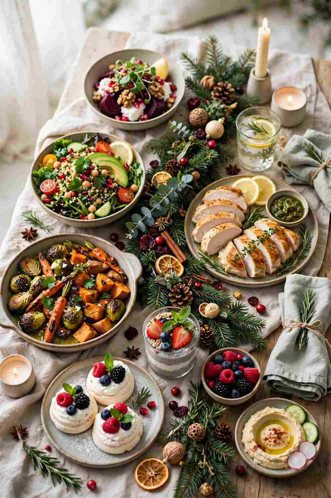
A Christmas table can feel generous without feeling heavy. These twenty-five healthy recipes — roasted vegetables, bright salads, lean grilled mains, warming soups and light desserts — bring all the color and flavor of the holidays with fresh ingredients and simple cooking. Serve a few alongside the richer dishes, or build the whole table lighter this year.
How to plan a lighter Christmas table
Balance is the whole trick: pair one rich dish with two light ones, and let roasted vegetables and salads do the heavy lifting on the plate. Roast the vegetables first — they hold well at room temperature — then grill the lean mains while everyone gathers. Keep dressings and sauces on the side so each person controls their own plate, and finish with fruit-based desserts instead of a second round of baking.
Good to know: Everything is written in American English, and measurements use US customary units — cups, tablespoons, and Fahrenheit — for cooks in the United States. Always follow safe food-handling guidance, and check labels for allergens when cooking for others.
Food safety: cook poultry to 165°F (74°C), ground turkey to 160°F (71°C), and fish to 145°F (63°C); shrimp is done when opaque. Egg dishes should reach 160°F (71°C). Refrigerate leftovers promptly. Check with a food thermometer.
Bowls, soups & light mains
Lean grilled and baked mains, hearty bowls and warming soups — light plates that still satisfy.
1. Roasted Vegetable and Quinoa Bowl
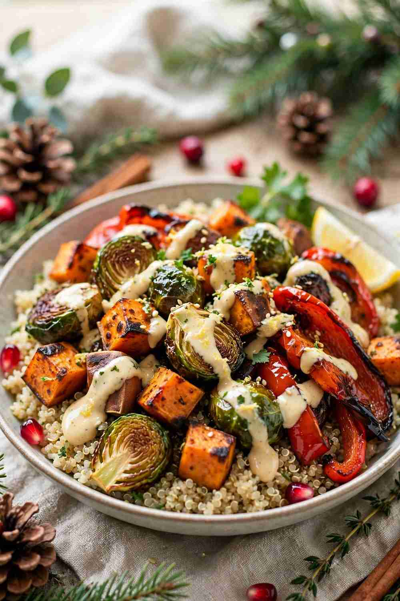
Sweet potato, Brussels sprouts and red bell pepper roast until caramelized at the edges, then pile over fluffy quinoa for a bowl that feels festive and light at the same time. A creamy lemon tahini drizzle ties the warm vegetables and nutty grain together. It is colorful enough for the Christmas table and hearty enough to stand as a main.
Ingredients
- 2 cups cooked quinoa
- 2 cups diced sweet potato
- 1 cup Brussels sprouts
- 1 red bell pepper
- 3 tbsp olive oil
- 1/4 cup tahini
- 1 lemon
Directions
- Preheat the oven to 425°F and line a large sheet pan with parchment paper.
- Dice the sweet potato into 1-inch pieces, halve the Brussels sprouts, and slice the red bell pepper into strips.
- Toss the vegetables with the olive oil and a pinch of salt and pepper, then spread them in a single layer on the pan.
- Roast for 25 minutes, turning once halfway through, until the edges are golden and caramelized and the sweet potato is tender.
- While the vegetables roast, whisk the tahini with the juice of the lemon and 2 tablespoons of warm water until smooth and pourable.
- Spoon the quinoa into bowls, top with the roasted vegetables, and drizzle generously with the lemon tahini. Serve warm.
2. Citrus Herb Grilled Chicken
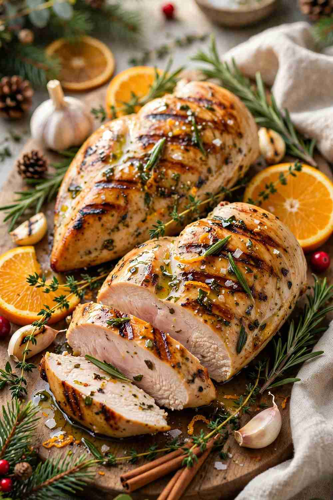
Chicken breasts soak in orange juice, olive oil, garlic, rosemary and thyme, then hit a hot grill for smoky char marks and juicy centers. The citrus keeps the meat bright and tender, and the herbs give it a woodsy holiday scent. It is a light main that still feels special on a Christmas plate.
Ingredients
- 4 chicken breasts
- 1/2 cup orange juice
- 2 tbsp olive oil
- 2 garlic cloves
- 1 tbsp chopped rosemary
- 1 tsp thyme
Directions
- Whisk the orange juice, olive oil, garlic, rosemary and thyme together in a shallow dish until combined.
- Add the chicken breasts and turn them to coat on all sides, then cover and refrigerate for 30 minutes.
- Preheat the grill to medium-high heat and brush the grates lightly with oil so the chicken does not stick.
- Lift the chicken out of the marinade and let the excess drip off, discarding the leftover marinade.
- Grill the chicken for 6 minutes per side, until dark grill marks form and the thickest part reaches 165°F.
- Transfer the chicken to a plate, rest for 5 minutes so the juices settle, then slice and serve with the pan juices spooned over the top.
Food safety: cook the chicken to 165°F (74°C) — check with a food thermometer.
3. Baked Cod with Lemon and Herbs
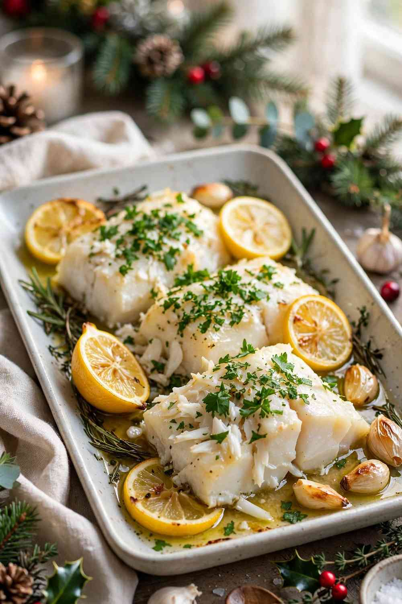
Cod fillets bake in a dish with olive oil, lemon and garlic until the flesh turns opaque and flakes at the touch of a fork. It is the simplest kind of holiday fish — clean, bright and light — and the lemon keeps every bite fresh. Serve it with the pan juices spooned over the top and a shower of parsley.
Ingredients
- 4 cod fillets
- 2 tbsp olive oil
- 1 lemon
- 2 garlic cloves
- 1 tbsp chopped parsley
- salt and pepper
Directions
- Preheat the oven to 400°F and lightly oil a baking dish.
- Pat the cod fillets dry with paper towels and season both sides with salt and pepper.
- Arrange the fillets in the dish, drizzle with the olive oil, and scatter the garlic over the top.
- Cut the lemon in half, squeeze one half over the fish, and slice the other half into thin rounds to lay on top.
- Bake for 12 minutes, until the fish is opaque and flakes easily with a fork.
- Sprinkle with the chopped parsley and serve at once with the pan juices spooned over each fillet.
Food safety: cook the cod to 145°F (63°C) — the fish should flake easily.
4. Roasted Sweet Potato and Black Bean Tacos
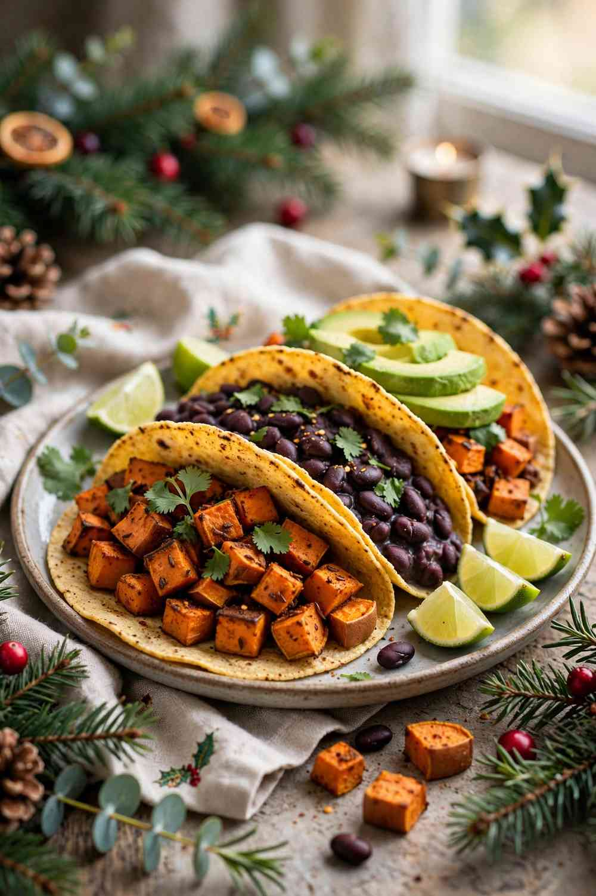
Diced sweet potato roasts with cumin and chili powder until the edges caramelize, then tucks into warm corn tortillas with creamy black beans and sliced avocado. They are smoky, filling and completely meatless, with a squeeze of lime to brighten every bite. A lighter taco that still feels like a celebration.
Ingredients
- 2 large sweet potatoes
- 1 can (15 oz) black beans
- 1 tsp cumin
- 1 tsp chili powder
- 8 corn tortillas
- 1 avocado
- lime wedges
Directions
- Preheat the oven to 425°F and line a sheet pan with parchment paper.
- Peel and dice the sweet potatoes into 1/2-inch cubes, then toss with the cumin, chili powder and half the oil.
- Spread the potatoes in a single layer and roast for 25 minutes, turning once, until tender and browned at the edges.
- While the potatoes roast, drain and rinse the black beans and warm them in a small saucepan over low heat.
- Warm the corn tortillas in a dry skillet for 30 seconds per side until soft and pliable.
- Fill each tortilla with roasted sweet potato, black beans and sliced avocado, then serve with lime wedges for squeezing over the top.
5. Butternut Squash Soup with Sage
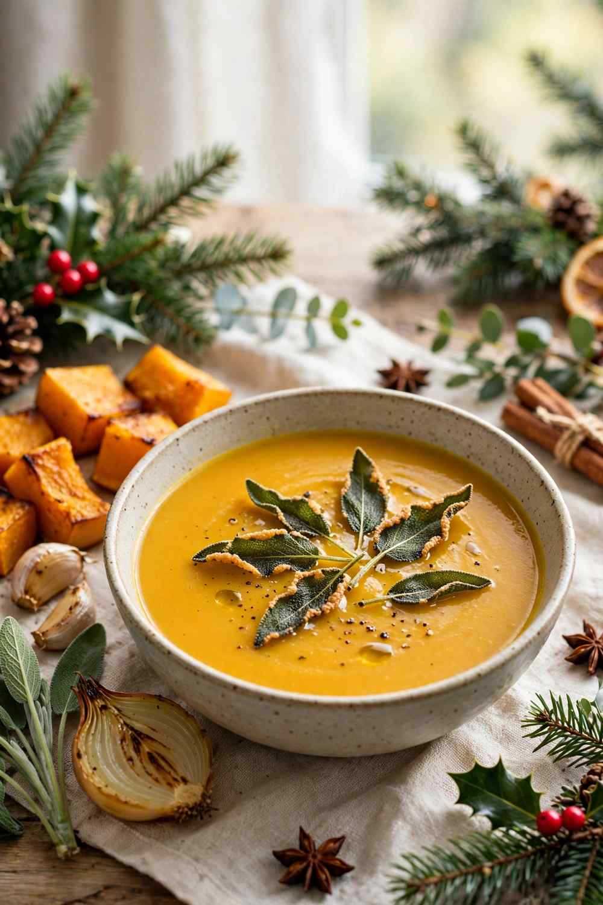
Roasted butternut squash, onion and garlic blend into a silky soup that needs no cream at all. The natural sweetness of the squash does the work, while crisp fried sage leaves add an earthy, fragrant crunch on top. It is a warm, golden bowl that fits the Christmas table and a light holiday lunch.
Ingredients
- 1 butternut squash
- 1 onion
- 3 garlic cloves
- 4 cups vegetable broth
- 1 tbsp olive oil
- 8 sage leaves
- salt and pepper
Directions
- Preheat the oven to 400°F and line a sheet pan with parchment paper.
- Halve the butternut squash, scoop out the seeds, and cut it into large chunks with the skin on.
- Toss the squash, onion wedges and garlic with the olive oil, then roast for 30 minutes until soft and caramelized at the edges.
- Scoop the roasted squash flesh into a large pot, add the broth, and bring to a gentle simmer.
- Blend the soup with an immersion blender until completely silky, adding a splash of water if it is too thick.
- Fry the sage leaves in a little hot oil for 30 seconds until crisp, then ladle the soup into bowls and top with the sage. Season with salt and pepper.
Light plates & sides
Light plates and sides — roasted vegetables, crisp salads and creamy mash without the heaviness.
6. Grilled Turkey and Cranberry Lettuce Wraps
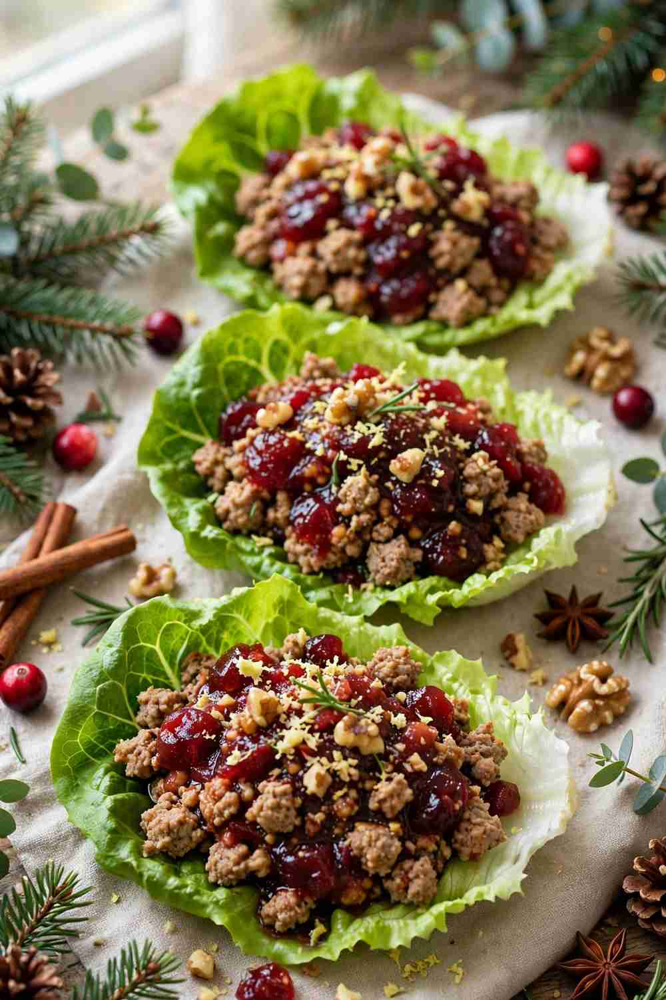
Lean ground turkey browns with ginger, then simmers in cranberry sauce and soy sauce for a sweet-savory filling that tastes like Christmas in a bite. Spooned into crisp lettuce cups and scattered with walnuts, it is light, fresh and easy to eat standing up. A holiday appetizer or a lighter main.
Ingredients
- 1 lb ground turkey
- 1/2 cup cranberry sauce
- 2 tbsp soy sauce
- 1 tsp ginger
- 8 lettuce leaves
- 1/4 cup chopped walnuts
Directions
- Heat a large skillet over medium-high heat and add the ground turkey.
- Cook the turkey for 6 to 8 minutes, breaking it into small crumbles with a wooden spoon, until no pink remains.
- Stir in the ginger and cook for 1 minute more until fragrant.
- Pour in the cranberry sauce and soy sauce, stirring until the sauce coats the turkey and thickens slightly, about 2 minutes.
- Remove from the heat and let the filling cool for 2 minutes so it does not wilt the lettuce.
- Spoon the warm turkey mixture into the lettuce leaves, sprinkle with the chopped walnuts, and serve at once.
Food safety: cook the ground turkey to 160°F (71°C).
7. Roasted Brussels Sprouts with Balsamic Glaze
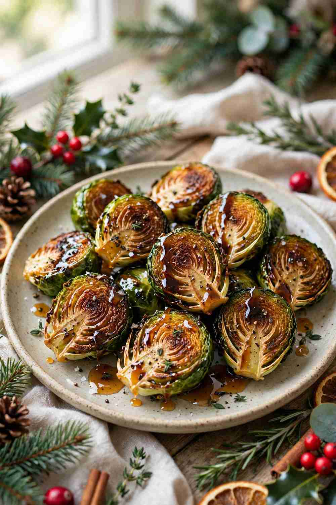
Halved Brussels sprouts roast cut-side down until deeply browned and crisp at the edges, then get a drizzle of balsamic and honey that turns sweet and sticky in the heat. They are the rare holiday side that everyone reaches for twice. Simple, bright and lighter than the usual Christmas vegetables.
Ingredients
- 2 lbs Brussels sprouts
- 3 tbsp olive oil
- 2 tbsp balsamic vinegar
- 1 tbsp honey
- salt and pepper
Directions
- Preheat the oven to 425°F and line a sheet pan with parchment paper.
- Trim the Brussels sprouts, peel away any yellowed outer leaves, and halve them through the stem.
- Toss the sprouts with the olive oil, salt and pepper, then spread them cut-side down in a single layer.
- Roast for 25 minutes, without stirring, until the cut sides are deeply browned and the centers are crisp-tender.
- While the sprouts roast, whisk the balsamic vinegar and honey together in a small bowl.
- Transfer the hot sprouts to a serving bowl, drizzle with the balsamic honey, toss gently, and serve warm.
8. Garlic Cauliflower Mash
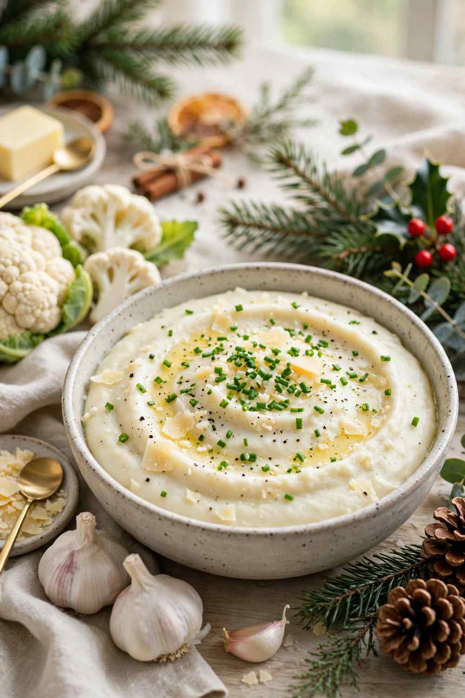
Steamed cauliflower and garlic mash with butter, milk and Parmesan into a smooth, creamy bowl that stands in for mashed potatoes without the heaviness. It is light, silky and surprisingly rich, with chives on top for a fresh bite. A lighter side that still belongs beside the turkey.
Ingredients
- 1 head cauliflower
- 3 garlic cloves
- 2 tbsp butter
- 1/4 cup milk
- 2 tbsp Parmesan
- chives
Directions
- Cut the cauliflower into even florets and peel the garlic cloves.
- Bring a large pot of salted water to a boil and steam the cauliflower and garlic until very tender, about 10 minutes.
- Drain well, then return the cauliflower and garlic to the hot pot for 1 minute to dry out any extra moisture.
- Add the butter, milk and Parmesan, then mash with a potato masher until smooth and creamy.
- Season with salt and pepper, tasting as you go, and add a splash more milk if you like it softer.
- Spoon into a warm serving bowl and top with chopped chives. Serve at once.
9. Honey Roasted Carrots with Thyme
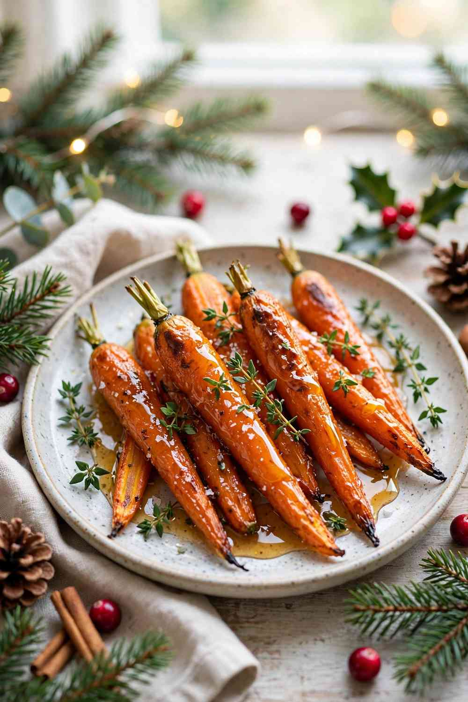
Carrots roast until tender and browned at the edges, then get a drizzle of honey and a scattering of thyme that glazes them in the last minutes of cooking. They turn sweet, glossy and fragrant, with the thyme keeping them savory. A simple side that looks like it took far more effort.
Ingredients
- 2 lbs carrots
- 2 tbsp olive oil
- 2 tbsp honey
- 1 tbsp chopped thyme
- salt and pepper
Directions
- Preheat the oven to 425°F and line a sheet pan with parchment paper.
- Peel the carrots and cut them on a diagonal into 1/2-inch thick pieces so they cook evenly.
- Toss the carrots with the olive oil, salt and pepper and spread them in a single layer on the pan.
- Roast for 25 minutes, turning once halfway through, until the carrots are tender and browned at the edges.
- Drizzle the honey over the hot carrots, sprinkle with the chopped thyme, and toss to coat.
- Return the pan to the oven for 5 more minutes, until the honey bubbles and glazes the carrots. Serve warm.
10. Quinoa Stuffed Acorn Squash
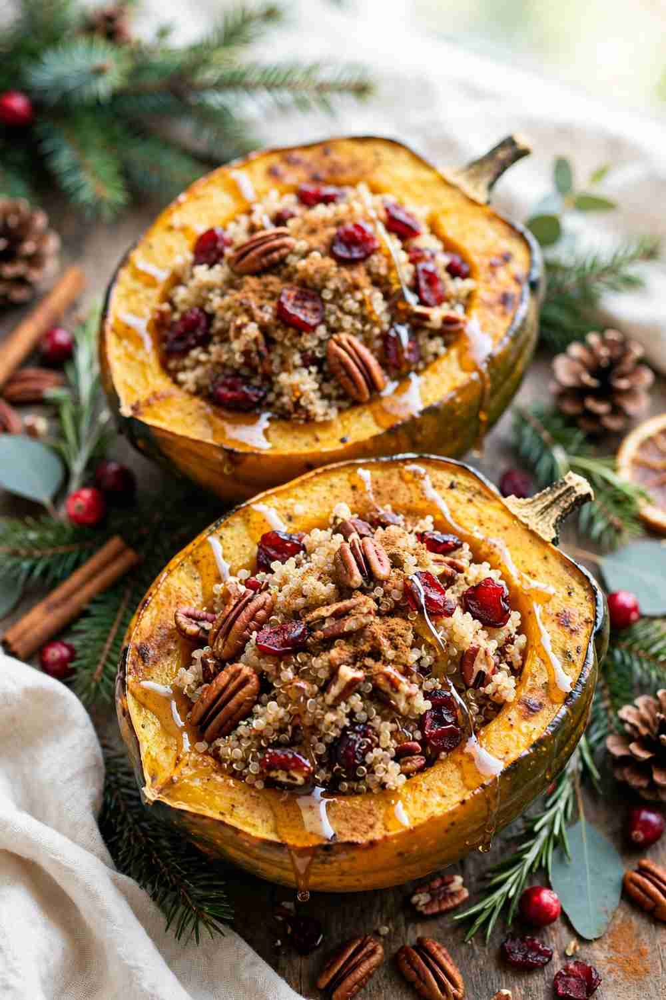
Roasted acorn squash halves cradle a filling of quinoa, dried cranberries and pecans, finished with a drizzle of maple syrup and a dusting of cinnamon. It is hearty, sweet and completely meatless, and it looks like a gift on the plate. A lighter main that still feels festive.
Ingredients
- 2 acorn squash
- 1 cup cooked quinoa
- 1/2 cup dried cranberries
- 1/2 cup chopped pecans
- 1 tbsp maple syrup
- 1 tsp cinnamon
Directions
- Preheat the oven to 400°F and line a sheet pan with parchment paper.
- Halve the acorn squash and scoop out the seeds and stringy pulp.
- Brush the cut sides lightly with oil, season with salt, and place cut-side down on the pan.
- Roast for 30 minutes, until the flesh is tender when pierced with a knife.
- While the squash roasts, stir the cooked quinoa, dried cranberries and chopped pecans together in a bowl.
- Turn the squash cut-side up, fill each half with the quinoa mixture, drizzle with maple syrup, and bake 10 more minutes until warmed through.
- Sprinkle with cinnamon and serve warm.
Salads, soups & roasts
Salads, soups and roasts — fresh, warming and full of color for the holiday table.
11. Green Bean Almondine
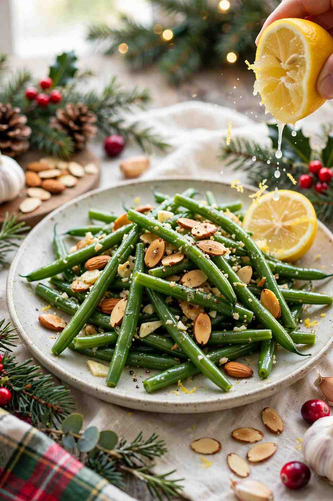
Crisp green beans blanch until bright green, then toss with butter-toasted almonds and garlic and a squeeze of lemon. The almonds add crunch, the butter adds richness, and the lemon keeps it all fresh. A classic side that is light, elegant and ready in minutes.
Ingredients
- 1 1/2 lbs green beans
- 1/2 cup sliced almonds
- 3 tbsp butter
- 2 garlic cloves
- 1 lemon
Directions
- Bring a large pot of salted water to a boil.
- Add the green beans and blanch for 3 minutes, until bright green and crisp-tender.
- Drain the beans and plunge them into a bowl of ice water to stop the cooking, then drain again and pat dry.
- Melt the butter in a large skillet over medium heat and add the sliced almonds.
- Cook the almonds for 2 minutes, stirring often, until golden, then add the garlic and cook 30 seconds more until fragrant.
- Add the green beans to the skillet and toss for 2 minutes until heated through.
- Squeeze the lemon juice over the beans, toss once more, and serve at once.
12. Roasted Beet and Goat Cheese Salad
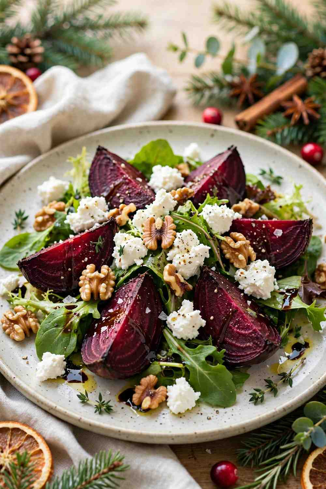
Earthy roasted beets, sliced into wedges, rest on mixed greens with creamy goat cheese and crunchy walnuts, all dressed with olive oil and balsamic. The colors alone make it Christmas-ready, and the sweet-savory balance keeps it light. A salad that earns its place on the holiday table.
Ingredients
- 4 beets
- 4 cups mixed greens
- 4 oz goat cheese
- 1/4 cup chopped walnuts
- 3 tbsp olive oil
- 1 tbsp balsamic vinegar
Directions
- Preheat the oven to 400°F and wrap each beet individually in foil.
- Place the wrapped beets on a sheet pan and roast for 45 minutes, until a knife slides in easily.
- Let the beets cool for 10 minutes, then rub off the skins with paper towels and slice into wedges.
- Whisk the olive oil and balsamic vinegar together with a pinch of salt and pepper.
- Arrange the mixed greens on a platter, top with the beet wedges, crumbled goat cheese and chopped walnuts.
- Drizzle with the dressing just before serving and toss gently at the table.
13. White Bean and Kale Soup
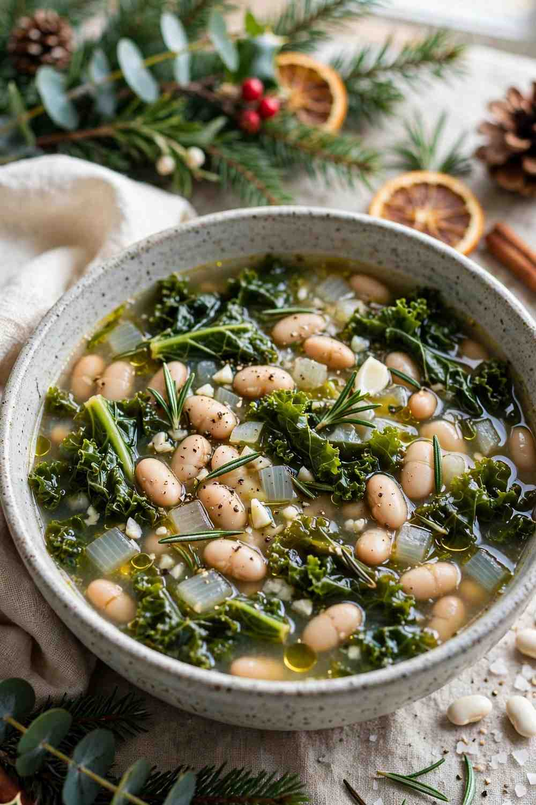
White beans and kale simmer in vegetable broth with onion, garlic and rosemary into a hearty soup that feels like a hug in a bowl. It is filling without being heavy, and the kale wilts into silky ribbons at the end. A lighter Christmas lunch that still warms you through.
Ingredients
- 2 cans (15 oz) white beans
- 4 cups chopped kale
- 1 onion
- 3 garlic cloves
- 4 cups vegetable broth
- 1 tbsp olive oil
- 1 tsp rosemary
Directions
- Heat the olive oil in a large pot over medium heat.
- Add the onion and garlic and cook for 5 minutes, stirring often, until soft and fragrant.
- Drain and rinse the white beans, then add them to the pot with the vegetable broth and rosemary.
- Bring to a gentle simmer and cook for 15 minutes so the flavors come together.
- Stir in the chopped kale a handful at a time, letting each batch wilt before adding the next.
- Simmer 3 more minutes until the kale is tender, then season with salt and pepper and ladle into bowls.
14. Baked Chicken with Rosemary and Lemon
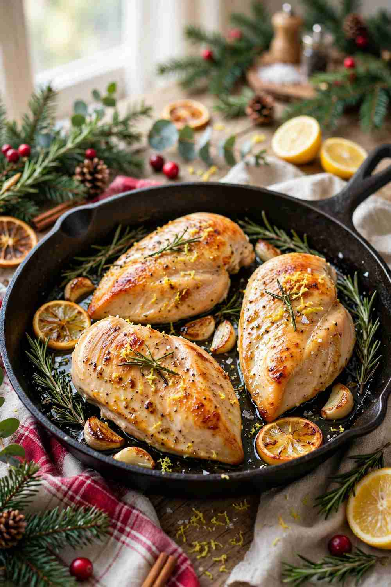
Chicken breasts rub with olive oil, lemon zest, rosemary and garlic, then bake until juicy with lightly golden edges. The lemon keeps the meat bright, and the rosemary gives it a woodsy holiday scent. It is the simplest kind of Christmas main — honest, light and full of flavor.
Ingredients
- 4 chicken breasts
- 2 tbsp olive oil
- 1 lemon
- 2 tbsp chopped rosemary
- 3 garlic cloves
- salt and pepper
Directions
- Preheat the oven to 400°F and lightly oil a baking dish.
- Zest the lemon, then cut it in half and set it aside.
- Rub the chicken breasts all over with the olive oil, lemon zest, rosemary and garlic, pressing the herbs into the meat so they stick, then season with salt and pepper.
- Place the chicken in the dish in a single layer and squeeze the lemon halves over the top.
- Bake for 22 minutes, until the juices run clear, the outside is lightly golden, and the thickest part reaches 165°F.
- Rest the chicken for 5 minutes so the juices settle, then slice and serve with the pan juices spooned over the top.
Food safety: cook the chicken to 165°F (74°C) — check with a food thermometer.
15. Herb Roasted Turkey Breast
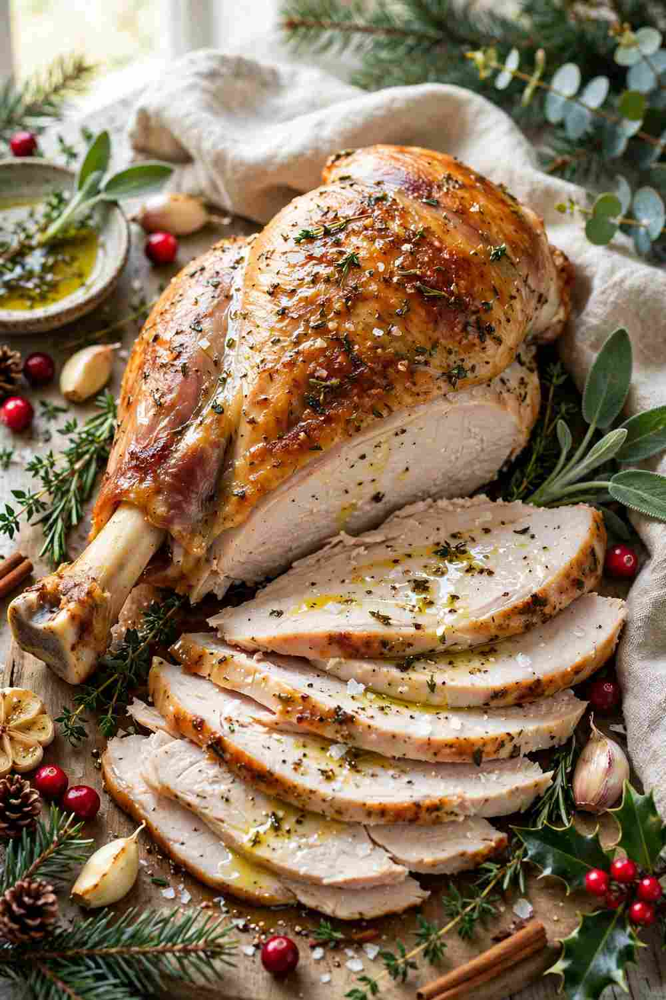
A bone-in turkey breast roasts low and slow with olive oil, sage, thyme and garlic until the skin turns golden and the meat stays juicy. It is the right size for a small Christmas table, with all the flavor of a whole bird and none of the fuss. Rest it well and slice it thin.
Ingredients
- 1 bone-in turkey breast (3 lbs)
- 3 tbsp olive oil
- 2 tbsp chopped sage
- 1 tbsp thyme
- 3 garlic cloves
- 1 lemon
Directions
- Preheat the oven to 325°F and place a rack in a roasting pan.
- Pat the turkey breast dry with paper towels.
- Rub the turkey all over with the olive oil, sage, thyme and garlic, then season generously with salt and pepper.
- Halve the lemon and tuck the halves into the pan beside the turkey.
- Roast for 1 hour 30 minutes, until the thickest part reaches 165°F and the skin is golden brown.
- Transfer the turkey to a cutting board and rest for 15 minutes before slicing so the juices settle.
- Slice thinly against the grain and serve with the pan juices spooned over the top.
Food safety: cook the turkey to 165°F (74°C) — check with a food thermometer.
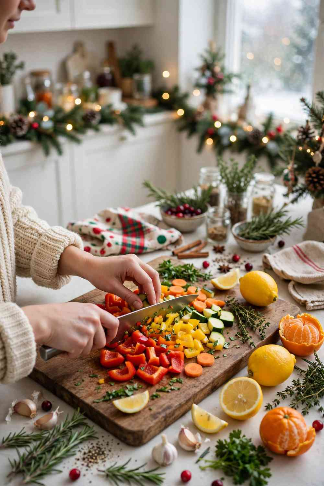
Light & fresh
Light and fresh dishes — meatless plates, baked fruit and cool desserts.
16. Zucchini Noodles with Pesto and Cherry Tomatoes
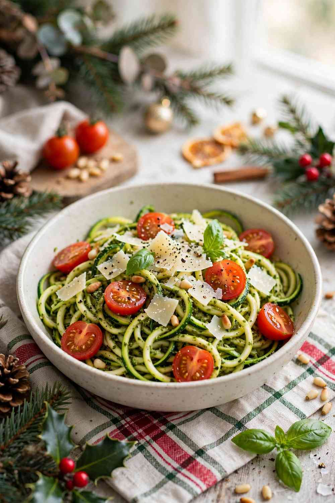
Zucchini noodles toss with basil pesto and halved cherry tomatoes in a warm skillet for just two minutes, so they stay fresh and lightly crisp. Parmesan and pine nuts finish the plate. It is a light, pasta-style dish that lets the holiday table feel generous without the heaviness.
Ingredients
- 4 zucchini
- 1/2 cup basil pesto
- 1 cup halved cherry tomatoes
- 1/4 cup Parmesan
- 2 tbsp pine nuts
Directions
- Trim the ends of the zucchini, then spiralize them into noodles, or cut them into long thin ribbons with a vegetable peeler.
- Halve the cherry tomatoes and set them aside in a small bowl.
- Heat a large skillet over medium heat and add the zucchini noodles.
- Cook for 2 minutes, tossing often with tongs, just until the noodles soften slightly but still have a fresh bite and have not gone watery.
- Remove the skillet from the heat and toss in the pesto and cherry tomatoes until everything is coated and the tomatoes are just warmed through.
- Divide among plates and top with Parmesan and pine nuts. Serve at once.
17. Stuffed Bell Peppers with Turkey and Quinoa
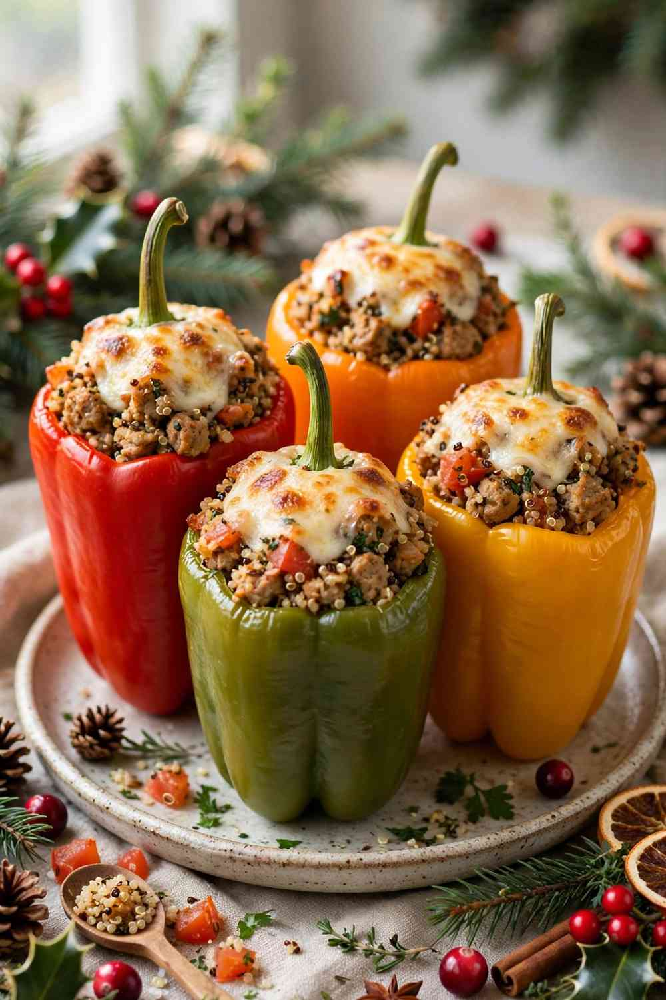
Bell peppers stand upright in a baking dish, filled with lean ground turkey, quinoa, diced tomatoes and cumin, then crowned with melted mozzarella. They bake until the peppers are tender and the cheese is golden. A complete meal in one tidy package, light and full of flavor.
Ingredients
- 4 bell peppers
- 1 lb ground turkey
- 1 cup cooked quinoa
- 1 can (14 oz) diced tomatoes
- 1 tsp cumin
- 1/2 cup shredded mozzarella
Directions
- Preheat the oven to 375°F and lightly oil a baking dish.
- Slice the tops off the bell peppers and remove the seeds and membranes.
- Heat a large skillet over medium-high heat and brown the ground turkey for 6 to 8 minutes, breaking it into crumbles, until no pink remains.
- Stir in the cooked quinoa, diced tomatoes and cumin and cook for 2 minutes until heated through.
- Stand the peppers upright in the baking dish and fill each one generously with the turkey and quinoa mixture.
- Sprinkle the mozzarella over the tops and bake for 30 minutes, until the peppers are tender and the cheese is melted and golden.
Food safety: cook the ground turkey to 160°F (71°C).
18. Baked Apples with Oats and Cinnamon
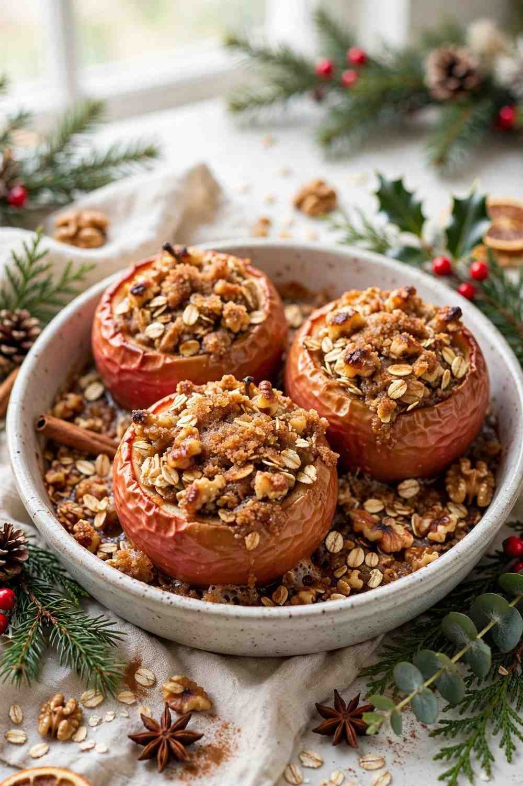
Apples core and fill with rolled oats, brown sugar, cinnamon and walnuts, then bake until tender with the filling bubbling at the top. They smell like Christmas morning and taste like a lighter apple crumble. Serve them warm, straight from the dish, with a spoonful of the pan juices.
Ingredients
- 4 apples
- 1/2 cup rolled oats
- 2 tbsp brown sugar
- 1 tsp cinnamon
- 2 tbsp butter
- 1/4 cup chopped walnuts
Directions
- Preheat the oven to 375°F and lightly butter a baking dish.
- Core the apples from the top using an apple corer or a small paring knife, leaving the bottoms intact so the filling stays inside.
- Stir the rolled oats, brown sugar, cinnamon and chopped walnuts together in a small bowl.
- Spoon the oat mixture into each apple, packing it in gently.
- Dot the tops with the butter and place the apples in the baking dish.
- Bake for 30 minutes, until the apples are tender when pierced with a knife and the filling is bubbling, then serve warm with a spoonful of the pan juices over the top.
19. Greek Yogurt Parfait with Berries and Granola
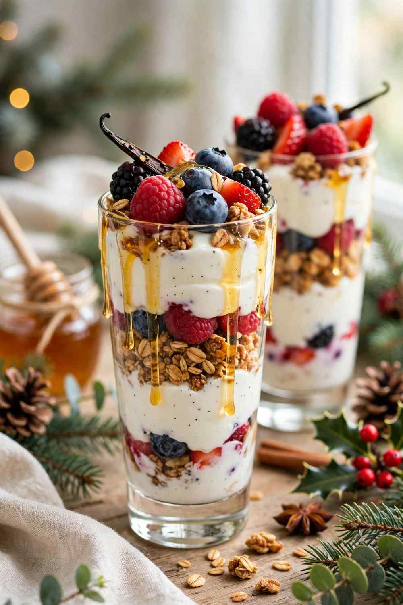
Greek yogurt layers with mixed berries and crunchy granola in tall glasses, sweetened with honey and a touch of vanilla. It is cool, creamy and light after a heavy holiday meal, and the berries make it look like a jewel. A dessert that feels indulgent without weighing you down.
Ingredients
- 2 cups Greek yogurt
- 2 cups mixed berries
- 1 cup granola
- 2 tbsp honey
- 1 tsp vanilla
Directions
- Stir the honey and vanilla into the Greek yogurt until smooth and evenly sweetened.
- Wash and dry the berries gently, halving any large ones so they layer neatly.
- Spoon a generous layer of the sweetened yogurt into the bottom of 4 glasses, about 1/4 cup each.
- Add a layer of berries, then a layer of granola, pressing it down lightly.
- Repeat the layers once more, ending with a layer of berries on top.
- Drizzle with a little more honey, cover and chill for at least 15 minutes until serving.
- Serve cold, straight from the fridge, with a small spoon for each glass.
20. Lemon Herb Grilled Shrimp Skewers
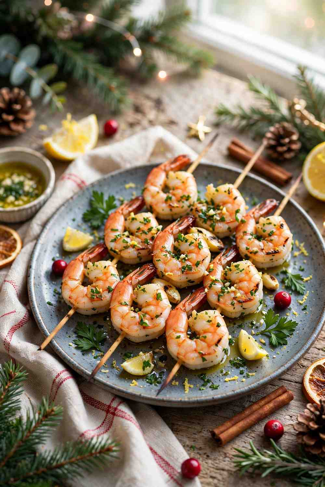
Shrimp toss with olive oil, lemon zest, garlic and parsley, then grill for just two minutes per side until pink and opaque. They are quick, bright and light, with the lemon keeping every bite fresh. A holiday starter or a lighter main that disappears fast.
Ingredients
- 1 lb large shrimp
- 2 tbsp olive oil
- 1 lemon
- 2 garlic cloves
- 1 tbsp chopped parsley
- salt and pepper
Directions
- Peel and devein the shrimp if needed, then pat them dry with paper towels.
- Toss the shrimp with the olive oil, lemon zest, garlic, parsley, salt and pepper in a bowl until every piece is evenly coated.
- Thread the shrimp onto skewers, leaving a little space between each one so they cook evenly.
- Preheat the grill to medium-high heat and oil the grates lightly.
- Grill the skewers for 2 minutes per side, until the shrimp are pink and opaque and curled into a C shape, with no translucent center remaining.
- Squeeze the lemon juice over the hot skewers and serve at once.
Food safety: cook the shrimp until opaque.
Warming & bright
Warming and bright finishes — spiced curries, roasted cauliflower and crisp air fryer sides.
21. Sweet Potato and Chickpea Curry
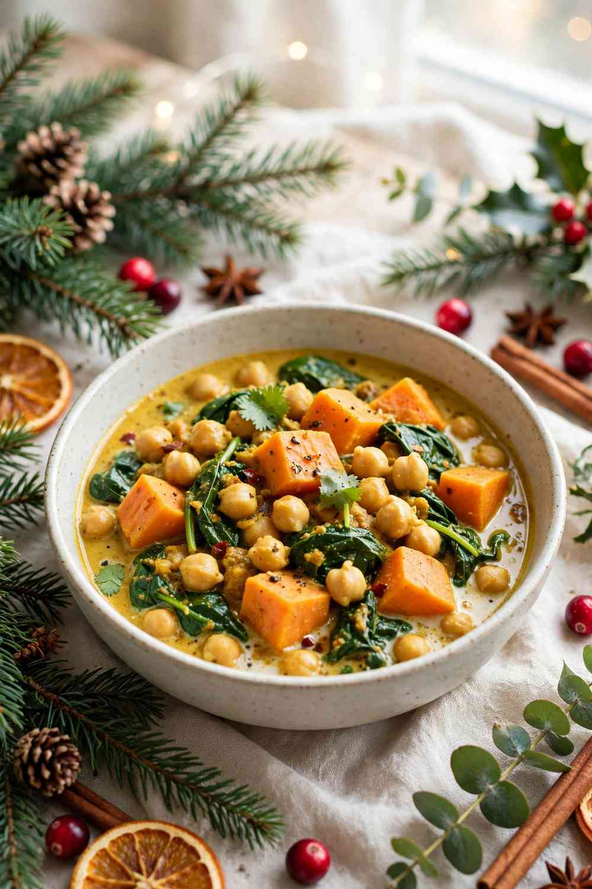
Sweet potato and chickpeas simmer in coconut milk with curry powder until the potatoes turn tender and the sauce thickens. Spinach wilts in at the end for color and freshness. It is warming, gently spiced and completely dairy-free, with no cream needed to make it rich.
Ingredients
- 2 large sweet potatoes
- 1 can (15 oz) chickpeas
- 1 can (14 oz) coconut milk
- 2 tbsp curry powder
- 1 onion
- 2 cups spinach
Directions
- Peel and dice the sweet potatoes into 1-inch cubes and finely chop the onion.
- Heat a little oil in a large pot over medium heat and cook the onion for 5 minutes until soft.
- Stir in the curry powder and cook for 1 minute until fragrant.
- Add the sweet potatoes, drained chickpeas and coconut milk, stirring to scrape up any browned bits, then bring to a gentle simmer.
- Cover and simmer for 20 minutes, until the sweet potato is tender.
- Stir in the spinach a handful at a time until wilted, season with salt, and serve warm.
22. Roasted Cauliflower Steaks with Chimichurri
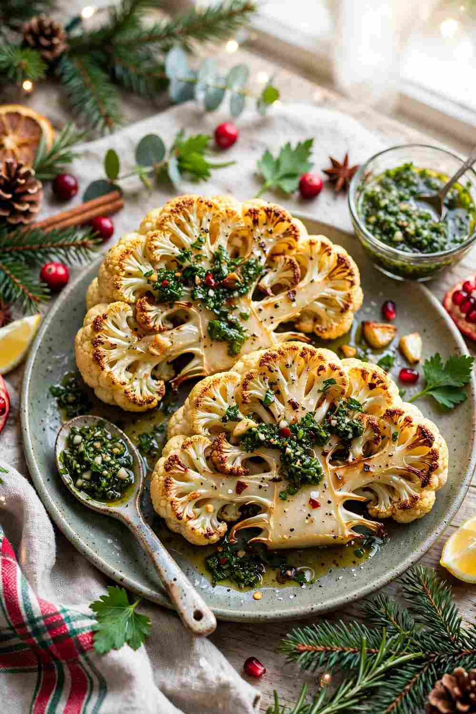
Thick cauliflower steaks roast until golden and tender, then get a spoonful of bright chimichurri made from parsley, garlic, red wine vinegar and oil. The herby sauce cuts through the roast flavor beautifully. A meaty, meatless main that holds its own on the Christmas table.
Ingredients
- 1 large head cauliflower
- 3 tbsp olive oil
- 1 cup parsley
- 2 garlic cloves
- 3 tbsp red wine vinegar
- 1/4 tsp red pepper flakes
Directions
- Preheat the oven to 425°F and line a sheet pan with parchment paper.
- Trim the leaves from the cauliflower and slice the head into 1-inch thick steaks, keeping the core intact so they hold together.
- Brush both sides of the steaks with the olive oil and season with salt and pepper.
- Roast for 25 minutes, flipping once halfway through, until the steaks are golden and tender.
- While the cauliflower roasts, blend the parsley, garlic, red wine vinegar, remaining oil and red pepper flakes into a chimichurri.
- Spoon the chimichurri over the hot cauliflower steaks and serve at once.
23. Spinach and Mushroom Frittata
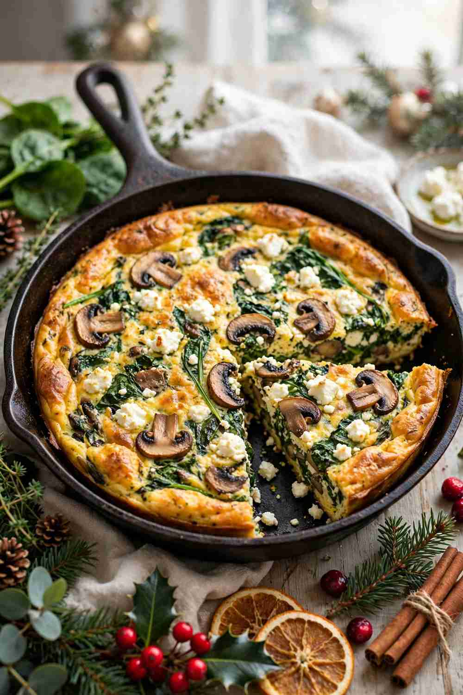
Eggs, spinach and mushrooms bake in a skillet with crumbled feta into a puffed, golden frittata that slices like a quiche. It is protein-packed and light, and it works for breakfast, brunch or a lighter holiday lunch. Serve it warm, straight from the pan.
Ingredients
- 8 eggs
- 2 cups spinach
- 1 cup sliced mushrooms
- 1/2 cup feta
- 2 tbsp olive oil
- salt and pepper
Directions
- Preheat the oven to 375°F and lightly oil a 10-inch oven-safe skillet.
- Heat the olive oil in the skillet over medium heat and cook the mushrooms for 5 minutes until browned.
- Add the spinach and cook for 2 minutes, stirring, until wilted, then spread the vegetables evenly in the pan.
- Whisk the eggs with a pinch of salt and pepper in a large bowl.
- Pour the eggs over the vegetables, reduce the heat to low, and cook for 3 minutes until the edges begin to set.
- Sprinkle the feta over the top and transfer the skillet to the oven.
- Bake for 12 minutes, until the frittata is puffed and set in the center. Rest 5 minutes, then slice and serve.
Food safety: cook until the eggs are set — egg dishes should reach 160°F (71°C).
24. Winter Citrus Salad with Fennel
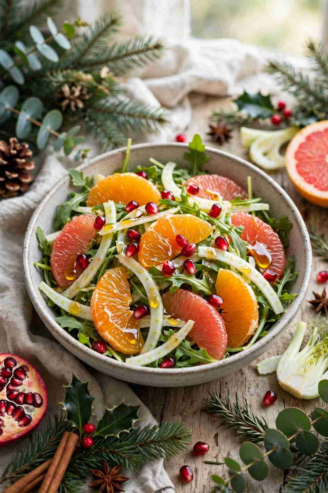
Orange and grapefruit segments rest on peppery arugula with shaved fennel and a scatter of pomegranate seeds, dressed with olive oil and honey. It is bright, crunchy and jewel-toned, the kind of salad that wakes up a heavy holiday plate. A lighter side with real presence.
Ingredients
- 3 oranges
- 1 grapefruit
- 1 fennel bulb
- 4 cups arugula
- 1/4 cup pomegranate seeds
- 3 tbsp olive oil
- 1 tbsp honey
Directions
- Cut the tops and bottoms off the oranges and grapefruit, then slice away the peel and pith.
- Working over a bowl, cut between the membranes to release the citrus segments, squeezing the membranes to catch the juice.
- Trim the fennel bulb, remove the tough outer layer, and shave it into thin slices with a mandoline or sharp knife.
- Arrange the arugula on a platter and scatter the citrus segments and shaved fennel over the top.
- Whisk the olive oil, honey and 2 tablespoons of the reserved citrus juice into a dressing.
- Drizzle the dressing over the salad, sprinkle with the pomegranate seeds, and serve at once.
25. Air Fryer Brussels Sprouts with Parmesan
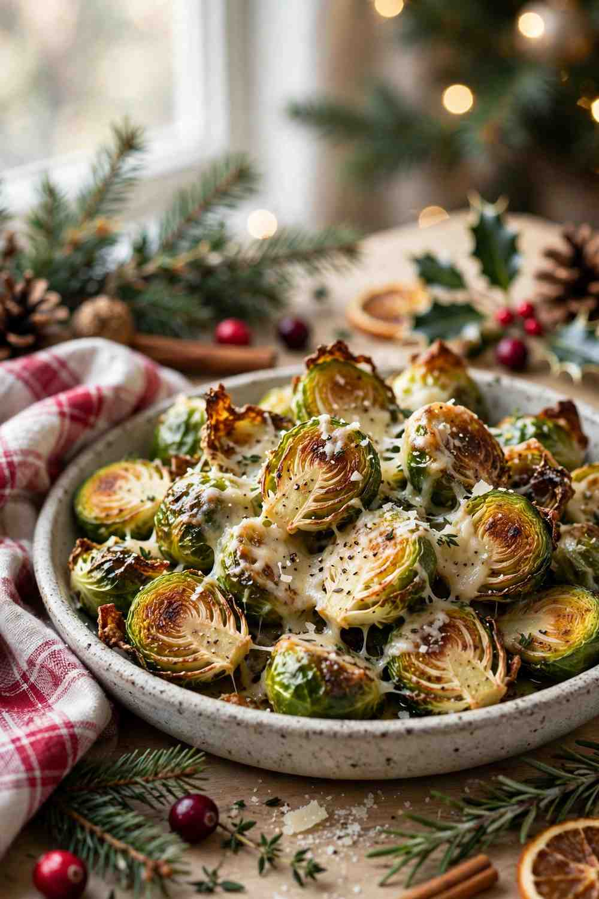
Halved Brussels sprouts air fry until crisp and browned at the edges, then toss with grated Parmesan while still hot so it melts into every crevice. They are crunchy, cheesy and lighter than the deep-fried version, with garlic powder adding a savory edge. A side that vanishes fast.
Ingredients
- 2 lbs Brussels sprouts
- 2 tbsp olive oil
- 1/2 cup grated Parmesan
- 1 tsp garlic powder
- salt and pepper
Directions
- Preheat the air fryer to 380°F.
- Trim the Brussels sprouts, peel away any yellowed outer leaves, and halve them through the stem.
- Toss the sprouts with the olive oil, garlic powder, salt and pepper in a large bowl.
- Spread the sprouts in the air fryer basket in a single layer, working in batches if needed.
- Air fry for 15 minutes, shaking the basket once halfway through, until the sprouts are crisp and browned at the edges.
- Transfer to a bowl, toss with the grated Parmesan while hot so it melts slightly, and serve at once.
Make-ahead & serving tips
Roast vegetables at high heat — 425°F — so they caramelize instead of steaming, and do not crowd the pan or they will go soft. Make dressings and sauces ahead and keep them in jars, so the table is just assembly. Leftovers keep well: roasted vegetables and grains reheat in a hot oven, and salads are best dressed just before serving.
Related articles
More roundups from the same table:
- 25+ Christmas Side Dishes for Your Holiday Table — roasted vegetables, creamy potatoes, stuffing and cranberry sauce.
- 25+ Christmas Breakfast Recipes for a Cozy Holiday Morning — casseroles, pancakes, cinnamon rolls and make-ahead bakes for Christmas Day.
- 20+ Christmas Air Fryer Recipes for Easy Holiday Cooking — crispy appetizers, roasted vegetables and festive desserts.
- 15+ Easy Christmas Crockpot Meals for a Crowd — big-batch soups, pies, stews and mains that feed a full table.
Keep exploring
- Browse the Healthy Recipes roundups — Fresh, light and wholesome everyday cooking.
- Browse all six categories — breakfast, lunch and dinner, desserts, air fryer, healthy recipes, and appetizers.
- More about the kitchen — what The Tasty Recipe Co is and how it works.
About The Tasty Recipe Co: Learn how we research, organize and review our food collections — see our About Us and Editorial Policy pages.
Recipe results can vary with ingredients, equipment, and technique. See our Disclaimer for food-safety and allergy notes.